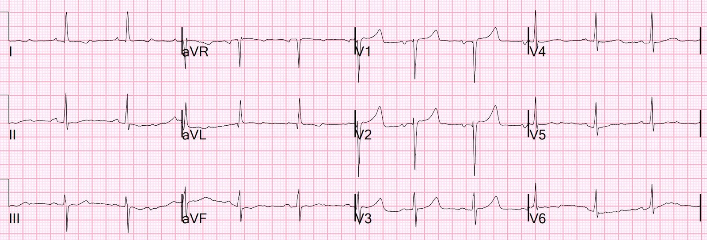
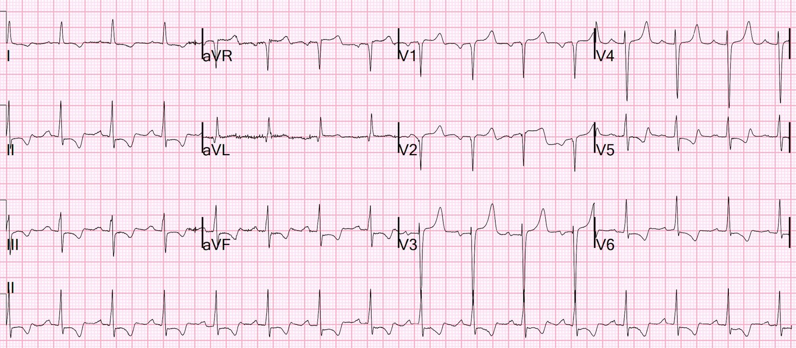
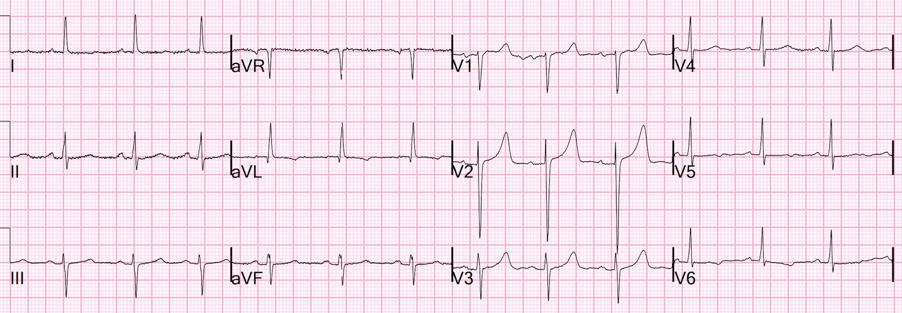
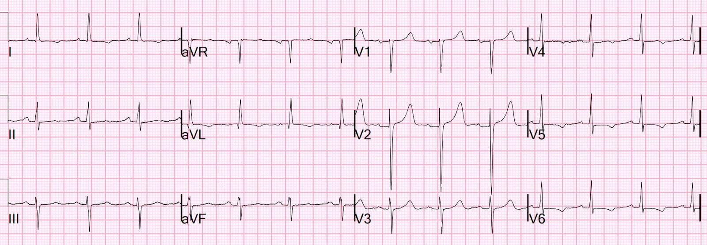
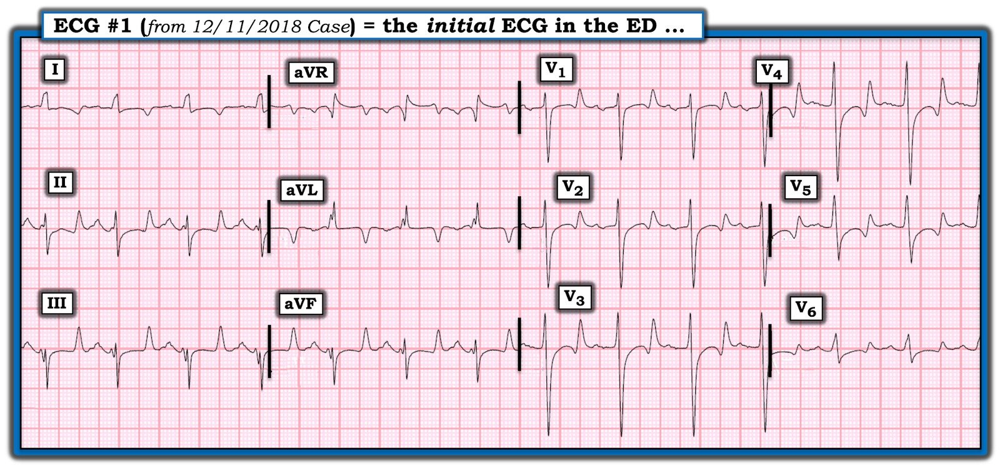
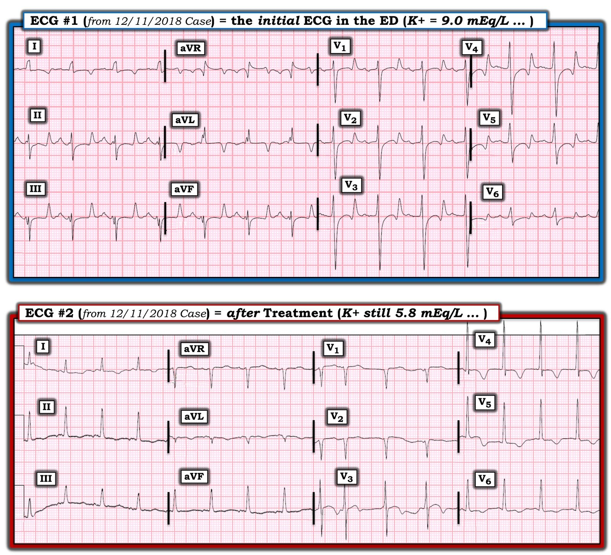

05/09/2022 — Đau thắt ngực không ổn định vẫn tồn tại. Nó có thể bị bỏ sót, nhất là khi không dùng troponin độ nhạy cao. Đôi khi bạn có thể bắt được nó trên điện tâm đồ.
Bản dịch tiếng Việt của bài "Unstable Angina still exists. It can be missed especially high sensitivity troponin is not used. Sometimes you can catch it on the ECG." – Dr. Smith’s ECG Blog. Giữ nguyên toàn bộ 7 hình ảnh của bản gốc.
Một phụ nữ 50 mấy tuổi có tiền sử tăng huyết áp (HTN), bệnh thận giai đoạn cuối (ESRD), bệnh động mạch vành (CAD), đã can thiệp PCI phức tạp vào lỗ xuất phát (ostial) LAD và nhánh trung gian (ramus) (10/2020) và phẫu thuật CABG 3 cầu nối (LIMA nối LAD, SVG nối nhánh bờ tù (OM), SVG nối nhánh trung gian)
Bà than phiền các đợt đau ngực sau xương ức từng lúc, lan lên vai trái, kéo dài 2-3 phút.
Bà đã được thăm khám trước đó tại một khoa cấp cứu (ED) khác 3 lần vì cùng cảm giác khó chịu ở ngực này.
–Lần 1, bà được “loại trừ” bằng xét nghiệm troponin tại chỗ (POC) ＜0.03 ng/mL.
–Lần 2, bà lại được “loại trừ” bằng troponin POC ＜0.03 ng/mL.
–Lần 3, bà được “loại trừ” bằng troponin thế hệ 4 làm tại phòng xét nghiệm, ở mức 0.018 ng/mL (Abbott Architect, giới hạn phát hiện (LoD) = 0.010 ng/mL, giới hạn trên tham chiếu (URL) = 0.030 ng/mL)
Lời khuyên:
KHÔNG dùng các xét nghiệm troponin tại chỗ hiện đang có trên thị trường. (Các xét nghiệm troponin tại chỗ độ nhạy cao rất tốt sắp ra mắt).
Lời khuyên #2:
Hãy dùng troponin độ nhạy cao (KHÔNG dùng troponin thế hệ 4). Bất kỳ troponin nào dùng đơn vị ng/mL hoặc mcg/L đều là thế hệ 4 (KHÔNG phải troponin độ nhạy cao thế hệ 5).
Ghi chú thêm: “Độ nhạy cao” chủ yếu có nghĩa là “độ chính xác cao”. Giá trị đo được rất chính xác ngay cả ở mức RẤT thấp. Điều này được thể hiện bằng “hệ số biến thiên” (thước đo độ lặp lại của kết quả khi đo cùng một mẫu nhiều lần); CV 10% ở mức rất thấp là tốt. Để được xem là độ nhạy cao, CV phải đạt 10% ở mức thấp hơn đáng kể so với URL bách phân vị thứ 99.
Điện tâm đồ ban đầu, không đau ngực, với K = 5.9 (lúc đó chưa biết nồng độ K)


Kết quả K trả về 5.9 mEq/L.
Troponin ban đầu trả về 6 ng/L.
Tăng kali máu được điều trị bằng D50 và insulin khoảng 2.5 giờ sau điện tâm đồ này.
15 phút sau khi dùng D50 và insulin, tức 3 giờ sau đó, bệnh nhân có một cơn đau ngực chỉ kéo dài 2-3 phút, nhưng nhân viên đã kịp ghi được một điện tâm đồ trong khoảng thời gian ngắn đó.


ST chênh xuống do thiếu máu cục bộ đáng kể ở II, III, aVF và V5-6.
Cơn đau hết nhanh với nitroglycerin (NTG)
1 giờ sau, không đau ngực


Kết quả K đo lại vẫn là 5.9.
Troponin đo lại trả về 22 ng/L (URL ở nữ là 16 ng/L, nên trường hợp này đủ tiêu chuẩn nhồi máu cơ tim.
Thêm 1 giờ sau nữa, vẫn không đau ngực:


Có một số bằng chứng thiếu máu cục bộ/tái tưới máu ở V5,6, với ST chênh xuống nhẹ và sóng T đảo ngược.
Không đo thêm troponin.
Bệnh nhân được dùng aspirin và heparin.
Siêu âm tim ngày hôm sau cho thấy:
–Phân suất tống máu thất trái ước tính là 71 %.
–Không phát hiện rối loạn vận động thành thất trái.
–Áp lực tâm thu động mạch phổi ước tính là 34 mmHg + áp lực nhĩ phải (RA).
–Hẹp van động mạch chủ nhẹ (Vmax 2.5 m/s, chênh áp trung bình 13 mmHg, chỉ số
không thứ nguyên 0.42 , diện tích van ước tính 1.5 cm2).
–Hở van hai lá 1+
–Kích thước buồng thất trái bình thường.
–Phân suất tống máu thất trái ước tính bình thường .
–Không có rối loạn vận động thành .
Chụp mạch vành cho thấy:
Tổn thương thủ phạm: nghi tái hẹp trong stent ở lỗ xuất phát LAD và hẹp LAD đoạn gần
Thêm 2 bài về đau thắt ngực không ổn định trong kỷ nguyên troponin độ nhạy cao:
Unstable Angina Still Exists in Era of high sensitivity troponin, with a short lesson on troponin interpretation (Đau thắt ngực không ổn định vẫn tồn tại trong kỷ nguyên troponin độ nhạy cao, kèm một bài học ngắn về diễn giải troponin)
“Unstable Angina still exists”, even in the Age of High Sensitivity Troponin (“Đau thắt ngực không ổn định vẫn tồn tại”, ngay cả trong Thời đại Troponin Độ nhạy cao)
Những điểm cần học:
1. Đau thắt ngực không ổn định vẫn tồn tại, ngay cả trong kỷ nguyên troponin độ nhạy cao; và nó nguy hiểm.
2. Đừng dùng troponin POC để loại trừ nhồi máu cơ tim cho đến khi các xét nghiệm độ nhạy cao có mặt trên thị trường.
3.. Luôn dùng troponin độ nhạy cao đo nhiều lần nếu kết quả đầu tiên đo được, TRỪ KHI cơn đau ngực đã bắt đầu ÍT NHẤT 3 giờ trước khi lấy máu VÀ cơn đau kéo dài đủ lâu để gây hoại tử cơ tim. Khoảng thời gian đó không được biết chính xác, nhưng chắc chắn cơn đau dưới 5 phút là không đủ để loại trừ ACS bằng troponin.
4.. Ghi lại điện tâm đồ khi đau tái phát và cố gắng ghi ngay trong lúc đang đau.

==================================
Bình luận của KEN GRAUER, MD (5/9/2022):
==================================
Bài viết quan trọng của Dr. Smith — trong đó ông đưa ra một số điểm then chốt (Pearl) liên quan đến việc sử dụng các sản phẩm troponin cụ thể hiện có, kết hợp với những thay đổi tinh tế trên các điện tâm đồ liên tiếp.
Điều làm phức tạp ca hôm nay — là sự hiện diện của tăng kali máu, cũng là trọng tâm bình luận của tôi. Mặc dù nồng độ K+ huyết thanh ghi nhận trong ca hôm nay chỉ là 5.9 mEq/L — rất khó dựa vào thông tin hiện có để biết nồng độ K+ huyết thanh tăng này có thể đã ảnh hưởng bao nhiêu (nếu có) đến các dấu hiệu trên những điện tâm đồ liên tiếp (đặc biệt vì nồng độ K+ huyết thanh đo lại, dù đã điều trị bằng D50 và insulin, một lần nữa vẫn cho đúng giá trị 5.9 mEq/L).
- Chúng tôi đã bàn luận rất nhiều ca tăng kali máu trên Dr. Smith’s ECG Blog — bao gồm trình tự “kinh điển” của các dấu hiệu điện tâm đồ được giảng dạy là sẽ xuất hiện theo mức độ tăng kali máu tăng dần (Xem Bình luận của tôi ở cuối trang trong bài ngày 26 tháng Một năm 2020 của Dr. Smith’s Blog). Dù tôi thấy việc nắm được những khái quát về các dấu hiệu điện tâm đồ tiến triển này là hữu ích — điều quan trọng cần nhấn mạnh là “không phải bệnh nhân nào cũng đọc sách giáo khoa” — và có thể có những khác biệt rõ rệt cả về trình tự lẫn sự xuất hiện của QRS giãn rộng, sóng T nhọn, sóng P nhỏ dần, v.v. Ví dụ — diễn tiến từ nhịp xoang sang rung thất (VFib) như là dấu hiệu điện tâm đồ thứ 1 của tăng kali máu đã từng được ghi nhận (emDocs, 2017 — Management of Hyperkalemia).
ĐIỂM THEN CHỐT (PEARL): Khi bệnh nhân bị tăng kali máu — không thể biết nồng độ K+ huyết thanh tăng có thể đang ảnh hưởng bao nhiêu đến độ rộng QRS và hình thái sóng ST-T cho đến khi bạn đưa K+ huyết thanh về bình thường — rồi GHI LẠI điện tâm đồ!
- Ví dụ — NẾU có ST chênh xuống đáng kể trên bản ghi nền — thì “hiệu ứng tổng hợp” của ST chênh xuống đó có thể làm giảm sóng T nhọn của tăng kali máu đủ mức để tạo ra “giả bình thường hóa” đoạn ST và sóng T.
- Tăng kali máu có thể che lấp các thay đổi sóng ST-T của nhồi máu cấp. Ngược lại — tăng kali máu có thể tạo ra hình ảnh “giả STEMI” bắt chước nhồi máu cấp.
- Với tăng kali máu nặng — bạn có thể ước lượng mức độ K+ huyết thanh dư thừa đang làm thay đổi điện tâm đồ qua sự cải thiện thấy được trong vòng vài phút sau khi tiêm calci tĩnh mạch. Tuy nhiên, vì thời gian tác dụng của calci tĩnh mạch có hạn (tức là chỉ ~30-60 phút) — sự cải thiện các thay đổi điện tâm đồ do tăng kali máu sau một liều calci tĩnh mạch sẽ chỉ thoáng qua (cho đến khi các biện pháp khác tạo ra tác dụng lâu dài hơn).
- CẢNH BÁO: Việc đánh giá ảnh hưởng của tăng kali máu lên các dấu hiệu điện tâm đồ trở nên đặc biệt khó khăn: i) Khi bệnh nhân của bạn đồng thời có đau ngực do thiếu máu cục bộ; ii) Khi các chi tiết về thời điểm ghi các điện tâm đồ liên tiếp, triệu chứng của bệnh nhân và thời điểm lấy máu xét nghiệm K+ huyết thanh không chính xác; và, iii) Khi bạn nhớ rằng một số bệnh nhân không hề xuất hiện dấu hiệu điện tâm đồ nào của tăng kali máu trước khi xảy ra rối loạn nhịp gây tử vong.
Ví dụ lâm sàng:
Tôi nghĩ cách tốt nhất để minh họa việc tăng kali máu có thể làm phức tạp việc đánh giá các thay đổi thiếu máu cục bộ trên điện tâm đồ — là lấy một ca từ một bài Blog trước đây của chúng tôi. Trong Hình 1 — tôi trình bày điện tâm đồ ban đầu ghi tại khoa cấp cứu từ bài ngày 11 tháng Mười Hai năm 2018 này. Bệnh nhân này đến khoa cấp cứu trong tình trạng hôn mê do nhiễm toan ceton do đái tháo đường (DKA).
- Mặc dù sóng T cao nhọn và nhọn đỉnh với đáy hẹp — chúng ta không thường thấy sóng T hai pha trong tăng kali máu như đang có ở các chuyển đạo V1 đến V6. Điều này có thể gợi ý gì?


TRẢ LỜI:
Như đã nhấn mạnh ở trên — ảnh hưởng của tăng kali máu lên điện tâm đồ cộng thêm vào (chồng lên) hình dạng sẵn có của điện tâm đồ nền!
- NẾU điện tâm đồ nền bất thường, với sóng ST-T chênh xuống có sẵn — thì mức độ sóng T nhọn do tăng kali máu có thể bị giảm đi đáng kể. HOẶC — bạn có thể thấy một hình ảnh “hỗn hợp”, với ST dạng vòm (coving) và một thành phần âm ban đầu của sóng T trước khi phần cuối sóng T nhọn lên (như thấy trong Hình 1).
DIỄN TIẾN CỦA CA BỆNH:
Bệnh nhân trong bài năm 2018 này bị toan máu kèm mất nước nặng và đường huyết 1400 mg/dL vào thời điểm ghi điện tâm đồ ban đầu ở Hình 1. K+ huyết thanh = 9.0 mEq/L.
- Bệnh nhân được điều trị tích cực với 4 lít dịch, nhiều liều calci tĩnh mạch, albuterol và insulin.
- Điện tâm đồ được ghi lại (Hình 2). Bạn thấy gì?


So sánh điện tâm đồ trước và sau điều trị:
Cần nhấn mạnh rằng K+ huyết thanh vẫn chưa về bình thường vào thời điểm ghi điện tâm đồ #2 ở Hình 2 (K+ huyết thanh = 5.8 mEq/L). Vì vậy — chúng ta vẫn chưa biết bản ghi nền thực sự của bệnh nhân này trông như thế nào. Dù vậy — từ điện tâm đồ #2 có thể thấy rõ rằng đã có sự cải thiện đáng kể về mức độ nặng của tình trạng tăng kali máu ở bệnh nhân này.
- Có nhịp nhĩ thấp ở điện tâm đồ #2 (tức là sóng P âm ở chuyển đạo II — nhưng sóng P dương ở chuyển đạo I). Có một PAC. Nhịp ở điện tâm đồ #1 là nhịp xoang.
- Đã có sự dịch chuyển trục đáng kể so với điện tâm đồ #1 (tức là trục mặt phẳng trán ở điện tâm đồ #2 là +70 độ — trong khi ở điện tâm đồ #1 có trục lệch trái rõ rệt). Do tăng kali máu gây ảnh hưởng bất lợi lên dẫn truyền — sự hiện diện của một trục mặt phẳng trán bất thường và/hoặc sự dịch chuyển trục rõ rệt so với bản ghi nền của bệnh nhân là những dấu hiệu bổ sung từ điện tâm đồ #1 gợi ý mức độ tăng kali máu là nặng!
- QRS đã trở nên hẹp ở điện tâm đồ #2. Phức bộ QRS chắc chắn rộng (tức là ít nhất 0.12 giây) ở điện tâm đồ #1.
- Các sóng T cao nhọn và nhọn đỉnh ở điện tâm đồ #1 không còn nữa. Thay vào đó — hiện thấy sóng T đảo ngược khá sâu, đối xứng ở các chuyển đạo V3, V4 và V5, với ít nhất là gợi ý ST dạng vòm bất thường ở các chuyển đạo này. Liệu các bất thường sóng ST-T này ở điện tâm đồ #2 là mới và chỉ điểm thiếu máu cục bộ? (và liệu chúng có thể còn rõ hơn nữa nếu điện tâm đồ được ghi lại sau khi tăng kali máu đã được giải quyết hoàn toàn) là điều chưa chắc chắn.
ĐIỀU CỐT LÕI: Việc xem điện tâm đồ #2 giải thích hình ảnh rất bất thường của ST dạng vòm với sóng T hai pha đã thấy ở điện tâm đồ #1 khi K+ huyết thanh = 9.0 mEq/L.
- Thông điệp đã rõ ràng — NẾU bệnh nhân đến viện với tăng kali máu đồng thời đang bị thiếu máu cục bộ cấp — thì các thay đổi thiếu máu cục bộ này trên điện tâm đồ có thể không nhận ra được cho đến khi K+ huyết thanh về bình thường và điện tâm đồ được ghi lại.